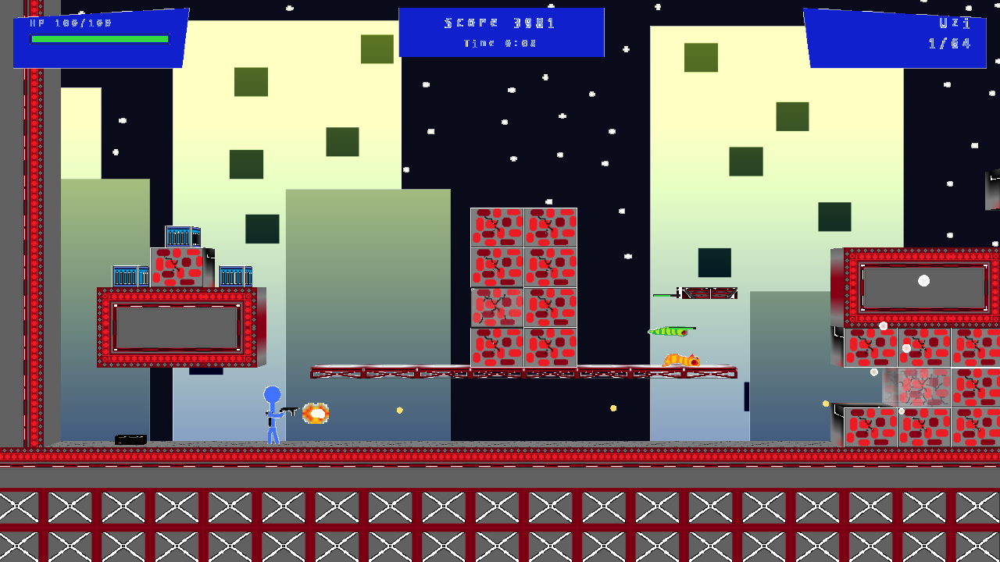

First title
Centroid
A 2013 Xbox Live Indie Game, rebuilt. Find a gun. Chunk some grubs.
Centroid is a side-scrolling platformer-shooter. Chunky two-tone worlds, a gun in your hands, grubs that need chunking. That’s the game.



Development captures from the woods, city night, and crater.
The game
- Genre Side-scrolling platformer-shooter
- Fantasy Find a gun. Chunk some grubs.
- Platforms Windows and Linux
- Status In development
- Created by Jack McGowen · SharpWing Studio
- Music Keenan Franklin · Ozzed
Press materials live on the press page.